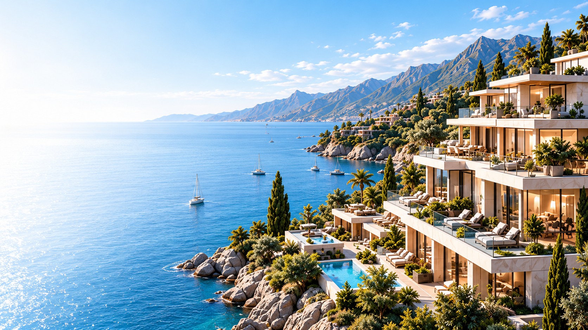
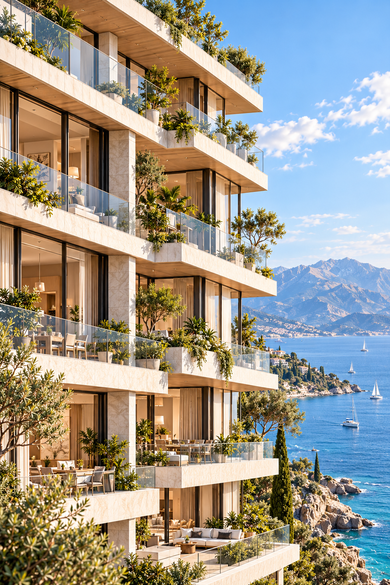
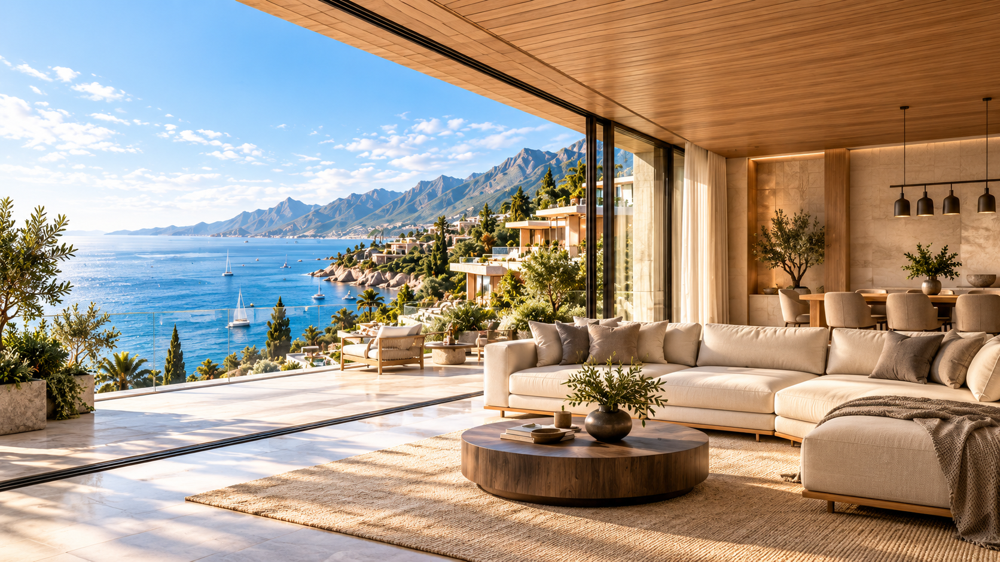
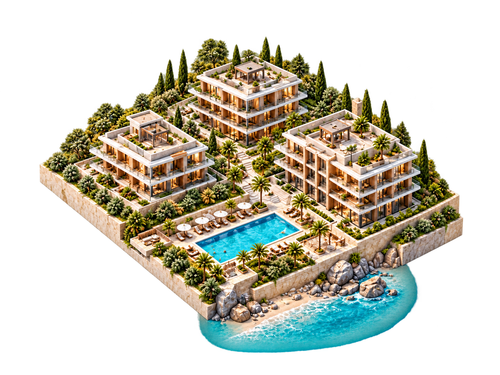
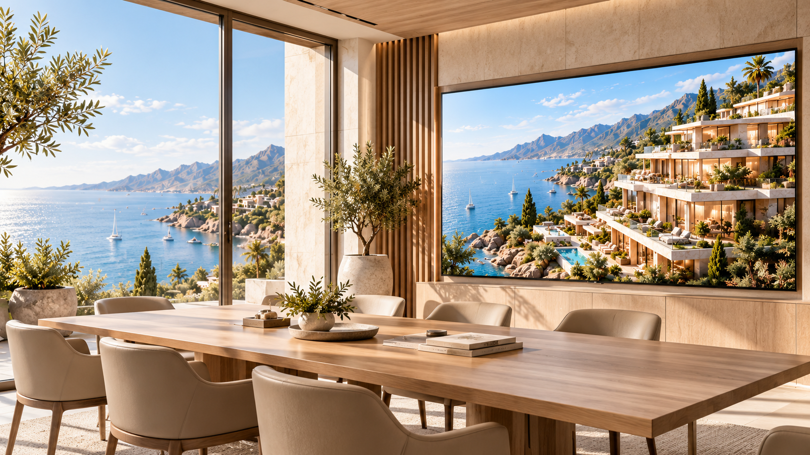
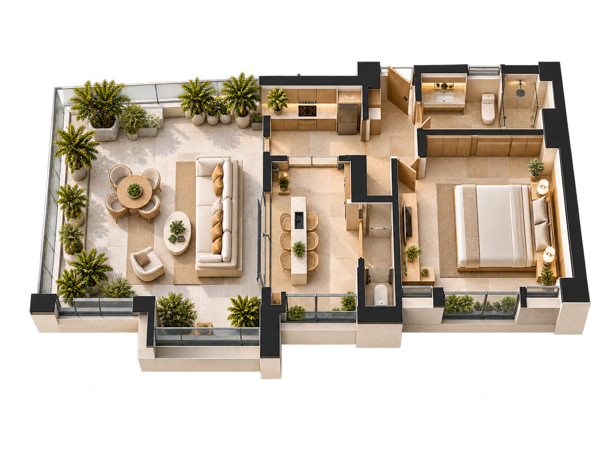
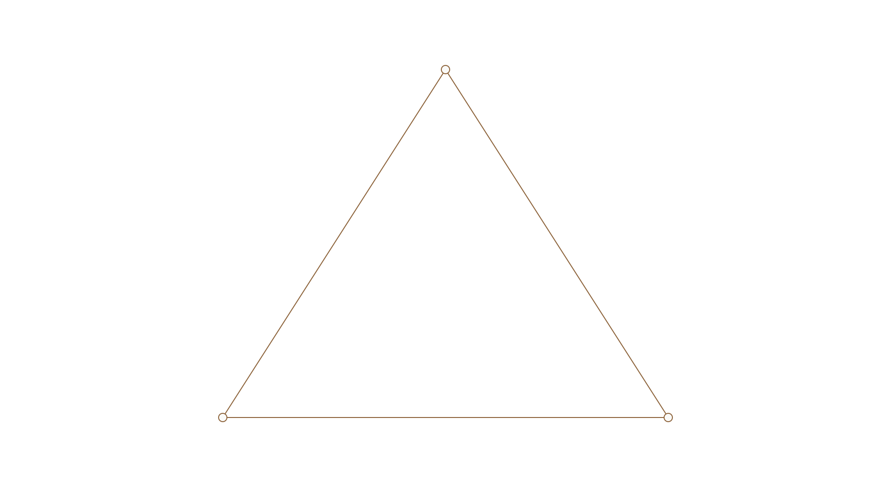

Панорама / первый экран
01_HERO_COASTAL_PROJECT_BG.png1672×941 · Фон
Текст слева на белом поле или дополнительном CSS-градиенте; основной корпус справа; focal 78% 55%.
Чистые изображения и прозрачные модели. Подписи — отдельными слоями.

1672×941 · Фон
Текст слева на белом поле или дополнительном CSS-градиенте; основной корпус справа; focal 78% 55%.

1024×1536 · Фон
Портретный кадр: фасад слева, море справа. Текст лучше рядом на белом; не растягивать в16:9.

1672×941 · Фон
Полноформатное медиа или правая колонка. Текст на отдельном белом поле; не накладывать на мебель/блики.

1448×1086 · Alpha
Прозрачный PNG. fit:contain. Надписи, линии и точки отдельными слоями; геометрия не live3D.

1672×941 · Фон
Большой экран справа, стол снизу. Заголовок лучше отдельным полем сверху/слева; не запекать UI в фон.

1448×1086 · Alpha
Прозрачный PNG, fit:contain. Демонстрационная планировка, не масштабный архитектурный план; параметры не выводить из изображения.

1920×1080 · Alpha
SVG без текста. Не график данных. Подписи DOM/PowerPoint.

1920×1080 · Фон
Нейтральная заливка. Для браузера предпочтителен CSS, SVG полезен как основа слайда.